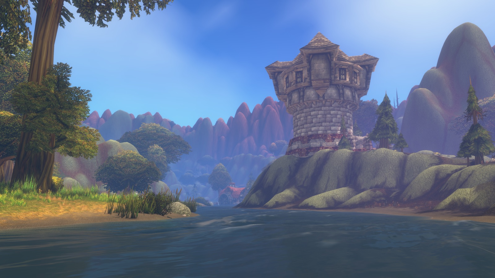
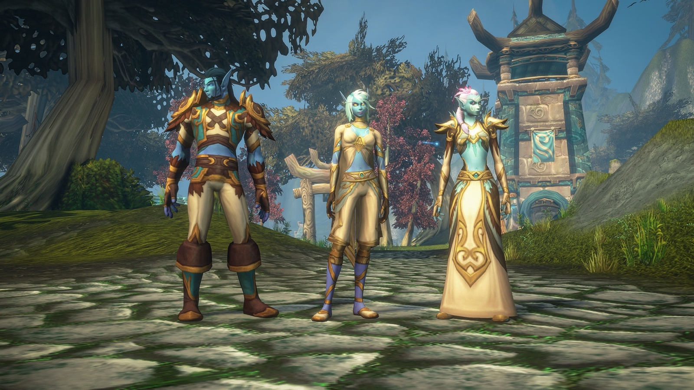
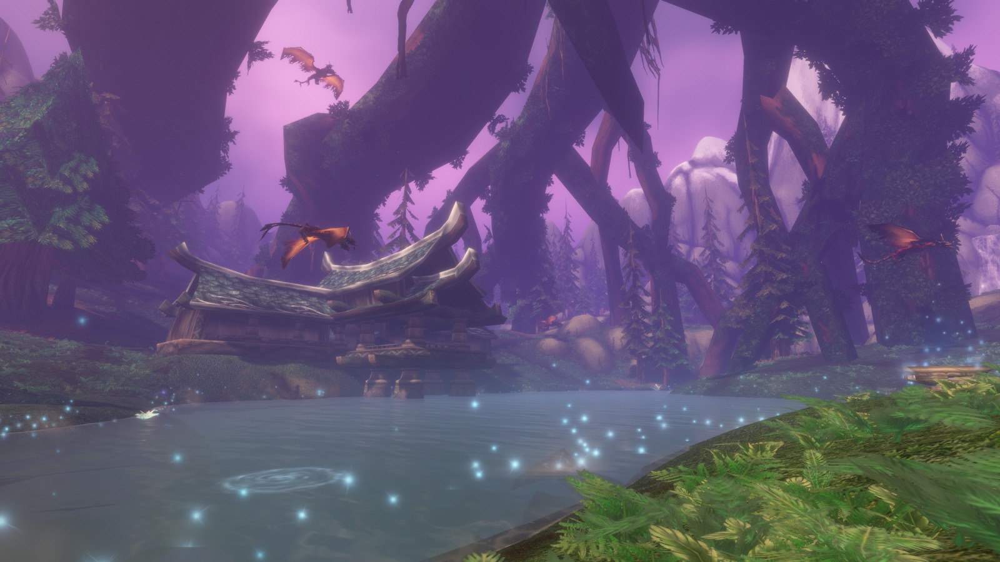

Stufe 20 zum Beta-Start
Die Obergrenze steigt später auf 30. Der letzte volle Testtag ist der 21. Oktober.
Offizieller Beta-Fahrplan ↗Aktuelle Bilder, bestätigte Inhalte und die Vorbereitung unserer künftigen Loot- und Raidplanung – übersichtlich an einem Ort.
Gildenplanung & Raidanmeldung öffnen →
Die erste bestätigte Etappe von der Beta bis zur Öffnung der neuen Schlachtzüge.
Was du jetzt testen kannst – nach Blizzards Ankündigung für die erste Testwoche.
Die Obergrenze steigt später auf 30. Der letzte volle Testtag ist der 21. Oktober.
Offizieller Beta-Fahrplan ↗Das neue Volk und sein Gebiet sowie Zoneninhalte bis Stufe 20 sind zum Teststart verfügbar.
Beta-Inhalte bei Blizzard ↗Hall of Thanes: Stufe 13–18. Ruins of Lordaeron: Stufe 15–20. Weitere Inhalte werden im Verlauf freigeschaltet.
Dungeonübersicht öffnen →Testumfang kann sich ändern. Datenbankeinträge allein bestätigen keine Verfügbarkeit oder Dropquelle im Spiel.
Die erste Teilmenge ist importiert. Insgesamt enthält die Datenbank 16.912 Einträge; neue Beta-Einträge sind separat filterbar.
Neue Beta-Items ansehen →913 Rezeptgegenstände und Baupläne sind nach Beruf zugeordnet, darunter 100 neue Beta-Einträge. Lehrerrezepte und bestätigte Dropquellen sind noch nicht vollständig erfasst.
Berufe und Rezepte öffnen →Blizzards Liste vom 17. September nennt unter anderem Fehler an Friseurstühlen und beim Unterzeichnen von Gildensatzungen. Prüfe bei Problemen die jeweils aktuelle offizielle Liste.
Offizielle Fehlerliste ↗Neue Interviewberichte und ergänzende Details aus der BlizzCon-Vorschau.
Kris Zierhut kündigt für jeden Raidboss besonders starke Gegenstände mit niedrigerer Dropchance an. Sie sollen ältere Raids relevant halten. Konkrete Itemlisten und Dropchancen fehlen noch.
The Sun · Entwicklerinterview ↗Dungeon-Gegner sollen deutlich weniger Erfahrung geben, Dungeonquests dafür deutlich mehr. Der erste vollständige Besuch soll besonders lohnend sein. Genaue EP-Werte sind noch offen.
The Sun · Entwicklerinterview ↗Laut Clay Stone gibt es aktuell keine Pläne für eine WoW-Marke oder kaufbare Levelboosts in Forever. Das ist keine dauerhafte Garantie. Ein WoW-Marken-Eintrag in der Datenbank bestätigt keine Verfügbarkeit im Spiel.
GamesRadar · Interviewbericht ↗MrGM zeigt ein modernes Auktionshaus, einen eingebauten Schadensmesser, Gildenbanken, Discord-Anbindung des Gildenchats und einen Friseur. Die gezeigten Funktionen stammen aus der Vorschau; Details können sich bis zum Start ändern.
WoW Hub · Beiträge von MrGM ↗Blizzard verlagert die anfänglichen Reittierkosten auf die Reitausbildung; beim Erlernen der Reitfähigkeit wird ein Reittier gewährt. Bonusheilung liefert zusätzlich ein Drittel ihres Wertes als Zauberschaden.
Blizzard · Deep Dive ↗Offiziell veröffentlichte Aufnahmen aus den Blizzard-Präsentationen.

Neue Geschichten und Regionen werden in die ursprüngliche Welt eingebettet. Kein Fliegen und keine Levelskalierung sollen das klassische Reisegefühl erhalten.

Für Horde und Allianz – mit eigenen Formen und Volksfähigkeiten.

Neue Beleuchtung und Details, wahlweise mit HD- oder klassischem Stil.
Blizzard hat neun neue Dungeons für Levelphase und Endgame angekündigt.
Gebiete erhalten wieder eine klarere Stufenfolge. Fliegen ist nicht vorgesehen.
Die überarbeitete Welt soll wahlweise mit moderner oder klassischer Optik spielbar sein.
Von Blizzard bestätigte Details aus dem „What’s Next“-Panel.
Forever ersetzt klassische Servernamen durch getrennte Regelwelten.
PvE mit einvernehmlichem PvP.
In umkämpften Gebieten können Gegner der anderen Fraktion angreifen.
Rollenspiel mit besonderen Vorgaben für Namen und Verhalten.
Der Tod ist endgültig. Danach ist ein Transfer in einen anderen Spielstil mit Wiederbelebung möglich.
Gruppen, Dungeons und Raids benötigen denselben Spielstil. Horde und Allianz bleiben getrennt. Stimmt eure Wahl deshalb mit Freunden und Gilde ab.
Normal, PvP und Roleplay teilen Sammlungen und Vermächtnispunkte. Fortschritt wird nicht nach Hardcore übernommen; nach einem Tod kann Hardcore-Fortschritt beim Transfer verfügbar werden.
Eine Sprachpräferenz und wiederkehrende Begegnungen sollen Gemeinschaften fördern. Charaktere erhalten zwei Namen; die Kombination ist innerhalb einer Region eindeutig.
Berufsboni, Rezepte und Baupläne im Berufsbereich ansehen →
Hall of Thanes, Ruins of Lordaeron, Whelgar-Ausgrabung, City of Dalaran, Blackmaw Hold, Drowned City, Krol’dok Stronghold, Alcaz Prison und Shaper’s Terrace.
Ein neues 15-gegen-15-Schlachtfeld mit Kontrollpunkten sowie Flaggenangriff und -verteidigung nach Art des Arathibeckens.
Spieler können draußen Lagerfeuer herstellen. Andere Abenteurer tragen über Berufe etwas bei und teilen Lager-Boni.
Ein neues Fortschrittssystem richtet sich besonders an Spieler, die gerne Stufe 1–60 spielen und mehrere Charaktere leveln.
Transmog ist optional. Dazu kommen offizielle Gamepad-Unterstützung sowie HD- und SD-Charaktermodelle mit klassischen Animationen.
Stormwind–Auberdine, Menethil–Southshore–Auberdine und eine Steamwheedle-Route von Tanaris nach Riverglades.
Das neue mittlere Gebiet ist ungefähr so groß wie das Schlingendorntal und bietet Inhalte für Horde und Allianz.
Beide Fraktionen erhalten Krieger, Jäger, Schurken und Druiden. Horde-Skyborne können Schamanen, Allianz-Skyborne Magier werden.
Weitere Raids, Dungeons, PvP, Weltinhalte, Hardcore und die Überarbeitung eines bekannten Raids sind bereits angekündigt.
Neun Klassen, drei Talentbäume und 51 Punkte. Plane deinen Build und teile ihn per Link.
Linksklick: Punkt hinzufügen · Rechtsklick oder Minus-Taste: entfernen · Umschalt-Klick: auffüllen. Auf dem Handy öffnet Antippen die Talentkarte mit Plus und Minus.
★ Neu in Forever · ◆ Geändert · ? Classic-Daten, für Forever noch unbestätigt
Items, Rezepte und Builds in diesem Browser merken – ohne Login. Beim Löschen der Browserdaten gehen sie verloren.
Wähle Rezepte und die Anzahl der Herstellungsvorgänge. Gleiche Zutaten werden zusammengezählt. Die Liste bleibt in diesem Browser gespeichert.
Rohbedarf für die gewählten Herstellungsvorgänge, ohne Abzug deines Inventars. Zwischenprodukte werden nicht automatisch aufgelöst.
Änderungen an unserer Forever-Seite und ihren Daten. Das sind keine offiziellen Patchnotes.
Unser importierter Bestand aus Wowheads Forever-Datenbank – mit Namen, Werten und Quellen.
Neu: 1.000 zusätzliche Einträge aus der Forever-Beta-Datenbank vom 18.09.2026. Werte und Verfügbarkeit sind vorläufig; dies ist noch keine vollständige Beta- oder Dropliste. Beta-Import ansehen →
Goldener Rahmen: Beta-Import oder möglicher Forever-Gegenstand. Das jeweilige Abzeichen unterscheidet die 1.000 Beta-Einträge von den 413 bisher unbestätigten Kandidaten.
Itemdatenbank wird beim Öffnen geladen …
Daten und Icons: Wowhead Forever ↗. Klicke auf einen Gegenstand für Werte, Fundorte und den Link zu vollständigen Effekten.
Die Gruppengrößen stammen aus Blizzards „What’s Next“-Zusammenfassung.
Der große neue Progressionsraid zum Auftakt.
Lootseite öffnen · Hyjal SummitEin kompakter Endgame-Raid für kleinere Gruppen.
Lootseite öffnen · Barrow DeepsDer klassische Schlachtzug bleibt Teil des ersten Fahrplans.
Lootseite öffnen · Onyxias HortCinematic, Gameplay und das ausführliche Entwicklerpanel direkt vom Warcraft-Kanal.
Neun Klassen mit ihren Talentbäumen, Fähigkeiten und spielbaren Völkern.
Daten werden geladen …
Quellen: Wowhead: Völker und Klassen · Forever Talents: Fähigkeiten · Blizzard: Deep Dive
Klassenwahl, Fraktionen und Volksboni im Überblick.
Skyborne: Magier nur bei der Allianz, Schamanen nur bei der Horde.
Neue Kombinationen: Mensch–Jäger, Zwerg–Schamane, Gnom–Priester, Ork–Magier, Troll–Hexenmeister und Untoter–Paladin.
Daten werden geladen …
★ Neue Kombination · ✓ Verfügbar · — Nicht verfügbar
Quellen: Wowhead: Völker und Klassen · Forever Talents: Fähigkeiten · Blizzard: Deep Dive
Zauber und Angriffe nach Klasse, Bereich und Rang durchsuchen.
Daten werden geladen …
Mouseover zeigt die Kurzinfo. Anklicken öffnet alle Ränge und den Classic-Vergleich.
Quellen: Wowhead: Völker und Klassen · Forever Talents: Fähigkeiten · Blizzard: Deep Dive
Rezepte, gemeinsame Lager und Fortschritt für deinen Account.
913 Rezeptgegenstände und Baupläne, darunter 100 Beta-Einträge – nach Beruf sortiert.
Der Bestand enthält 813 Classic-Rezeptgegenstände und 100 neue Beta-Datenbankeinträge. Die Zuordnung folgt der angegebenen Berufsvoraussetzung. Beta-Werte und Erhältlichkeit sind noch vorläufig. Klassenzauberbücher und Bücher zum Erhöhen der Berufsstufe sind ausgeklammert. Reine Lehrerrezepte sind nicht enthalten. Zutaten und Herstellungseffekte zeigt die Detailkarte, soweit verfügbar.
Rezepte werden geladen …

Alle Berufe erhalten Ergänzungen für unterschiedliche Fertigkeitsstufen. Bestimmte Dungeonbosse liefern seltene Baupläne. Gekochtes Essen verbessert Attribute und die Erfahrung durch besiegte Gegner.
Lager können Händler, Reparaturen und Arbeitsplätze bieten. Nach einer kurzen Rast wirken Stärkungen eine Stunde.
Je Beruf sind drei Lagerobjekte vorgesehen; erste Varianten beginnen bei Fertigkeit 20.
| Beruf | Objekt | Nutzen |
|---|---|---|
| Schmiedekunst | Schleifstein | Angriffskraft |
| Schneiderei | Fraktionsbanner | Willenskraft |
| Kräuterkunde | Räucherkerze | Intelligenz |
| Alchemie | Labor | Arbeitsplatz |
| Lederverarbeitung | Gerbgestell | Fortgeschrittene Rezepte |
| Kochkunst | Größeres Feuer | Mehr Lagerplätze |
Entsprechende Klassenbuffs und Lagerboni sind nicht stapelbar.


„Reiche Ernte“ erhöht Materialerträge beim Bergbau, Kräutersammeln und Kürschnern. Punkte werden accountweit verdient und pro Charakter verteilt: zunächst bis zu 16 von 65 erreichbaren Punkten.
Aus BlizzCon-Aufnahmen übertragen; noch keine endgültigen Beta-Tooltips.
Längere und stärkere Elixiere und Fläschchen, aufwertbarer Stein der Weisen.
Vorschau · Werte noch vorläufigReparaturfunktion, Gürtelschnallen und neue Rezepte.
Vorschau · Werte noch vorläufigRingverzauberungen, Splitterumwandlung und Stabherstellung.
Vorschau · Werte noch vorläufigZusätzliche Geräte, Bomben und Schmuckstücke; gnomische und goblinische Spezialisierung.
Vorschau · Werte noch vorläufigMagiewiderstand, zusätzliche Kräuter und bessere Chancen auf seltenen Lotus.
Vorschau · Werte noch vorläufigRüstungssets, Rüstungsverbesserungen und erhöhte Reitgeschwindigkeit.
Vorschau · Werte noch vorläufig5% mehr maximale Gesundheit und zusätzliche Erze.
Vorschau · Werte noch vorläufig5% mehr Schaden gegen Wildtiere und Drachkin sowie seltene Häute.
Vorschau · Werte noch vorläufigBerufseigene Stickereien, zusätzliche Stoffbeute und neue Rezepte.
Vorschau · Werte noch vorläufigVollständige Rezeptlisten, Materialmengen und endgültige Werte sind noch offen. Quelle der Berufsboni: Forever Talents · Stand 13. September 2026.
Offiziell bestätigt: über 600 neue Rezepte, erste Lagerobjekte ab Fertigkeit 20 und Baupläne von Dungeonbossen. Blizzard: Deep Dive vom 13. September 2026.
Die Lootseiten für die drei bekannten Raids sind vorbereitet. Gegenstände und Dropquellen ergänzen wir mit den Daten aus der Beta.
Noch keine bestätigten Drops erfasst.
Lootseite öffnen · Hyjal SummitNoch keine bestätigten Drops erfasst.
Lootseite öffnen · Barrow DeepsBekannte Classic-Zuordnungen ansehen; Forever-Loot noch nicht bestätigt.
Lootseite öffnen · Onyxias HortWowhead-Datenstand vom 14. September 2026. Übernommene Classic-Daten, für Forever noch nicht bestätigt. Die Listen enthalten nur bisher eindeutig zugeordnete Items.
Lootlisten werden geladen …
Spielbare Beta-Dungeons, angekündigte Instanzen und bisherige Lootdaten – getrennt nach ihrem Stand.
Stand 18. September 2026 · Beta-Woche 1
Für diese beiden Dungeons ist der Teststart bestätigt. Verifizierte Drops liegen uns noch nicht vor.
Die Testfreigabe ist noch nicht bestätigt. Lootlisten ergänzen wir, sobald belegte Quellen vorliegen.
Wowhead-Datenstand vom 14. September 2026. Diese Fundortzuordnungen stammen aus Classic und bestätigen keine Drops in Forever.
Die 1.000 neuen Beta-Datenbankeinträge enthalten bisher keine eindeutigen Dungeon- oder Bosszuordnungen.
Lootlisten werden geladen …
Beta-Woche 1 · jetzt testbar · Stufe 13–18 · Stand 18.09.2026
| Gegenstand | Ausrüstungsplatz | Quelle / Boss |
|---|---|---|
| Noch keine bestätigten Lootdaten verfügbar. Gegenstände und Dropquellen ergänzen wir mit den Daten aus der Beta. | ||
Beta-Woche 1 · jetzt testbar · Stufe 15–20 · Stand 18.09.2026
| Gegenstand | Ausrüstungsplatz | Quelle / Boss |
|---|---|---|
| Noch keine bestätigten Lootdaten verfügbar. Gegenstände und Dropquellen ergänzen wir mit den Daten aus der Beta. | ||
WoW Forever · angekündigt; Testfreigabe noch nicht bestätigt
| Gegenstand | Ausrüstungsplatz | Quelle / Boss |
|---|---|---|
| Noch keine bestätigten Lootdaten verfügbar. Gegenstände und Dropquellen ergänzen wir mit den Daten aus der Beta. | ||
WoW Forever · angekündigt; Testfreigabe noch nicht bestätigt
| Gegenstand | Ausrüstungsplatz | Quelle / Boss |
|---|---|---|
| Noch keine bestätigten Lootdaten verfügbar. Gegenstände und Dropquellen ergänzen wir mit den Daten aus der Beta. | ||
WoW Forever · angekündigt; Testfreigabe noch nicht bestätigt
| Gegenstand | Ausrüstungsplatz | Quelle / Boss |
|---|---|---|
| Noch keine bestätigten Lootdaten verfügbar. Gegenstände und Dropquellen ergänzen wir mit den Daten aus der Beta. | ||
WoW Forever · angekündigt; Testfreigabe noch nicht bestätigt
| Gegenstand | Ausrüstungsplatz | Quelle / Boss |
|---|---|---|
| Noch keine bestätigten Lootdaten verfügbar. Gegenstände und Dropquellen ergänzen wir mit den Daten aus der Beta. | ||
WoW Forever · angekündigt; Testfreigabe noch nicht bestätigt
| Gegenstand | Ausrüstungsplatz | Quelle / Boss |
|---|---|---|
| Noch keine bestätigten Lootdaten verfügbar. Gegenstände und Dropquellen ergänzen wir mit den Daten aus der Beta. | ||
WoW Forever · angekündigt; Testfreigabe noch nicht bestätigt
| Gegenstand | Ausrüstungsplatz | Quelle / Boss |
|---|---|---|
| Noch keine bestätigten Lootdaten verfügbar. Gegenstände und Dropquellen ergänzen wir mit den Daten aus der Beta. | ||
WoW Forever · angekündigt; Testfreigabe noch nicht bestätigt
| Gegenstand | Ausrüstungsplatz | Quelle / Boss |
|---|---|---|
| Noch keine bestätigten Lootdaten verfügbar. Gegenstände und Dropquellen ergänzen wir mit den Daten aus der Beta. | ||